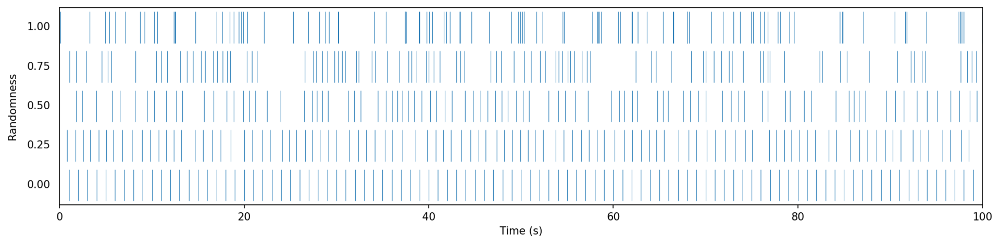

Metronome
A digital source unit that emits a pulse at a regular pace. It is conceptually similar to an
Alarm that automatically restarts after each trigger. Metronomes are ideal for
triggering periodic events in interactive systems, such as blinking LEDs, synchronizing motor
movements, or scheduling actions at regular intervals. Each time the metronome “ticks,” it
evaluates to true for a single frame, and false otherwise.
Parameters
period(): Sets the duration of one cycle in seconds.
frequency(): Alternative to period, sets the rate in cycles per second (Hz).
bpm(): Another convenience method to set the frequency using beats per minute (BPM).
phase(): Sets the initial offset within the cycle (in range [0,1]).
Randomization
Metronomes can also be used to generated randomized patterns using the jitter() function.
This makes their ticks feel less mechanical and closer to natural rhythms such as raindrops falling,
typing on a keyboard, or the reactions of a living entity. When activating randomization, the metronome does
not trigger at perfectly regular intervals anymore. Instead, the length of each cycle is perturbed according
to the chosen randomness level. At low values (close to 0), the timing remains close to steady with
gentle variation. At high values (close to 1), the ticks may cluster together or leave longer pauses, while
still averaging the correct period over time. This means that even with randomness, the metronome respects
its period setting in the long run, but the spacing between individual ticks is altered.
This graph shows the effect of different randomization levels on event triggers (all metronomes have a one-second period):
Basic Example
The simplest use of a metronome is to trigger an LED blink every 0.5 seconds:
#include <Plaquette.h>
Metronome myMetro(0.5); // tick every 0.5 seconds
DigitalOut led(13);
void begin() {}
void step() {
if (myMetro) {
led.toggle();
}
}
Multiple Metronomes
You can run several metronomes in parallel to control independent events:
#include <Plaquette.h>
DigitalOut led(LED_BUILTIN);
Metronome metroFast(0.5); // Blink at 2 Hz
Metronome metroSlow(2.0); // Trigger every 2 seconds
void step() {
if (metroFast) led.toggle();
if (metroSlow) Serial.println("Tick!");
}
Randomized Metronome
The following sketch blinks the LED at an average rate of once per second, but with irregular spacing:
#include <Plaquette.h>
DigitalOut led(13);
Metronome metro(1.0); // base period of 1 second
void begin() {
metro.jitter(1.0); // 100% jittering level
}
void step() {
if (metro) {
led.toggle();
}
}
Reference
-
class Metronome : public DigitalUnit, public AbstractOscillator
Chronometer digital unit which emits 1/true/”on” for one frame, at a regular pace.
Public Functions
-
Metronome(Engine &engine = Engine::primary())
Constructor.
- Parameters
engine – the engine running this unit
-
Metronome(float period, Engine &engine = Engine::primary())
Constructor.
- Parameters
period – the period of oscillation (in seconds)
engine – the engine running this unit
-
inline virtual bool isOn()
Returns true iff the metronome fires.
-
virtual void onBang(EventCallback callback)
Registers event callback on metronome tick (“bang”) event.
-
inline virtual bool isOff()
Returns true iff the input is “off”.
-
inline virtual int getInt()
Returns value as integer (0 or 1).
-
inline virtual float get()
Returns value as float (either 0.0 or 1.0).
-
inline virtual bool on()
Sets output to “on” (ie. true, 1).
-
inline virtual bool off()
Sets output to “off” (ie. false, 0).
-
inline virtual float put(float value)
Pushes value into the unit.
- Parameters
value – the value sent to the unit
- Returns
the new value of the unit
-
inline virtual bool putOn(bool value)
Pushes value into the unit.
- Parameters
value – the value sent to the unit
- Returns
the new value of the unit
-
inline virtual float mapTo(float toLow, float toHigh)
Maps value to new range.
-
inline operator bool()
Operator that allows usage in conditional expressions.
-
inline float seconds() const
Returns engine time in seconds.
-
inline uint32_t milliSeconds() const
Returns engine time in milliseconds.
-
inline uint64_t microSeconds() const
Returns engine time in microseconds.
-
inline unsigned long nSteps() const
Returns number of engine steps.
-
inline float sampleRate() const
Returns engine sample rate.
-
inline float samplePeriod() const
Returns enginesample period.
-
virtual void start()
Starts/restarts the oscillator.
-
virtual void period(float period)
Sets the period (in seconds).
- Parameters
period – the period of oscillation (in seconds)
-
inline virtual float period() const
Returns the period (in seconds).
-
virtual void frequency(float frequency)
Sets the frequency (in Hz).
- Parameters
frequency – the frequency of oscillation (in Hz)
-
inline virtual float frequency() const
Returns the frequency (in Hz).
-
virtual void bpm(float bpm)
Sets the frequency in beats-per-minute.
- Parameters
bpm – the frequency of oscillation (in BPM)
-
inline virtual float bpm() const
Returns the frequency (in BPM).
-
virtual void phase(float phase)
Sets the phase at % of period.
- Parameters
phase – the phase (in % of period)
-
inline virtual float phase() const
Returns the phase (in % of period).
-
virtual void phaseShift(float phaseShift)
Sets the phase shift (ie.
the offset, in % of period).
Warning
This function is disabled if randomness() > 0.
- Parameters
phaseShift – the phase shift (in % of period)
-
virtual float phaseShift() const
Returns the phase shift (ie.
the offset, in % of period).
Warning
This function always returns 0 when randomness() > 0.
-
virtual void jitter(float jitterLevel)
Sets the jittering level in [0, 1] (0: no jitter, 1: max jitter).
-
virtual float jitter() const
Returns the randomness level in [0, 1].
-
virtual float timeToPhase(float time) const
Utility function to convert time to phase.
- Parameters
time – relative time in seconds
- Returns
the equivalent phase
-
virtual void setTime(float time)
Forces current time (in seconds).
Warning
This function is disabled if randomness() > 0.
-
virtual void addTime(float time)
Adds time to current time (in seconds).
Warning
This function is disabled if randomness() > 0.
-
inline virtual bool isRunning() const
Returns true iff the wave is currently running.
-
inline virtual bool isForward() const
Returns true iff the wave is moving forward in time.
-
inline virtual void setForward(bool isForward)
Sets the direction of oscillation.
- Parameters
isForward – true iff the wave is moving forward in time
-
inline virtual void forward()
Sets the direction of oscillation to move forward in time.
-
inline virtual void reverse()
Sets the direction of oscillation to move backward in time.
-
inline virtual void toggleReverse()
Toggles the direction of oscillation.
-
virtual void stop()
Interrupts and resets to zero.
-
virtual void pause()
Interrupts process.
-
virtual void resume()
Resumes process.
-
virtual void togglePause()
Toggles pause/unpause.
-
Metronome(Engine &engine = Engine::primary())